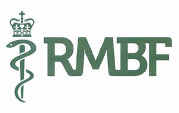
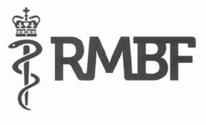

Trade Mark Journal No.2025/038 19 September 2025
UK00004248622 13 August 2025 (9,16,36,41,44)
Mark 1

Mark 2

The rights conferred by this registration are personal to the Royal Medical Benevolent Fund and may not be enforced or acquired by any licensee or assignee/transferee of the said Royal Medical Benevolent Fund. This limitation shall not restrict the Royal Medical Benevolent Fund from permitting third parties to use the mark under contract.
- Class 9
- Downloadable publications; Downloadable podcasts; Downloadable electronic newsletters; Electronic publications.
- Class 16
- Printed leaflets; Printed pamphlets; Printed brochures; Printed booklets; Publications (Printed -); Printed newsletters; Printed information sheets; Information booklets.
- Class 36
- Financing and funding services; Financial grant services; Charitable fund raising services; Fund raising services; Charitable fund raising; Benevolent fund services; Fund raising for charitable purposes; Fundraising and sponsorship; Provision of loans; Philanthropic services concerning monetary donations; Information services relating to finance; Advisory services relating to finance; Consultancy services relating to personal finance; Consultation services relating to financial matters; Advisory services relating to financial matters; Consultancy relating to educational financial assistance.
- Class 41
- Coaching relating to finance; Advice relating to medical training; Education (Information relating to -); Coaching [training]; Career counselling [training and education advice]; Career counselling and coaching; Guidance (Vocational -) [education or training advice]; Vocational guidance [education or training advice]; Life coaching (training); Career advisory services (education or training advice); Coaching; Education and training; Personal development training; Consultancy services relating to training; Health and wellness training; Training services relating to occupational health; Career counselling relating to education and training; Educational and training services relating to healthcare; Providing publications from a global computer network or the internet which may be browsed; Publishing of newsletters; Online publications, namely blogs; Publication of booklets; Non-downloadable electronic publications; Organisation of Webinars; Publishing of web magazines; Publication of leaflets; Providing non- downloadable electronic publications; Seminars; Providing on-line publications (non-downloadable); Provision of on-line electronic publications; Organisation of seminars; Publication of electronic books and journals online; Providing on-line electronic publications; Online education services.
- Class 44
- Psychotherapy services; Medical counseling; Psychological counseling.
Royal Medical Benevolent Fund
Representative: Capsticks Solicitors LLP